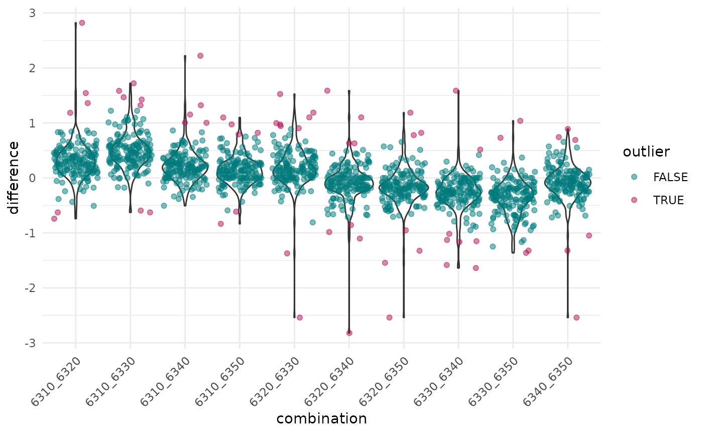

Turnout Outliers
turnout.RmdTo detect anomalies in voter turnout, the plausi-package
offers functions that allow for systematic comparison of turnout
differences across various proposals for all precincts.
Generally, there usually is a relatively clear ranking in turnout levels. Certain proposals mobilize more than others. Factors such as the topic of the proposal, the intensity of the campaign, and the level at which the issue is addressed all play a significant role. Cantonal proposals typically show lower turnout across the board compared to national proposals on the same voting day. We can leverage this for validation purposes. The following example uses open voting data available on opendata.swiss for illustration.
Data Retrieval
Option 1: Retrieve voting results dynamically via swissdd from opendata.swiss
We can access all voting information on the federal level using the
swissdd package.
# Install and attach package
devtools::install_github("politanch/swissdd")
library(swissdd)
# Retrieve results from the canton of Zurich for all federal votes from 2020-09-27
results <- swissdd::get_nationalvotes(votedates = c("2020-09-27")) |>
filter(canton_id == 1)Option 2: Use the preloaded result_data included in the package
# Get historical package data
results <- result_data |>
filter(votedate == "2020-09-27")Calculate Voter Turnout Differences
# Get all possible combinations of proposals
combinations <- as.data.frame(t(combn(unique(results$id), 2)))
# Reduce the dataset to turnout, vote id and geographic attributes
data_wide <- results |>
select(id, canton_name, mun_name, mun_id, stimmbeteiligungInProzent) |>
# Transpose to wide format
pivot_wider(names_from = id, values_from = stimmbeteiligungInProzent) |>
mutate_if(is.character, as.factor)
# Calculate turnout differences
diff1 <- get_differences(
data_wide,
combinations$V1,
combinations$V2,
geo_cols = c("canton_name", "mun_name", "mun_id")
)Identify Suspicious Voter Turnout Differences
Now that we have calculated the voter turnout differences between the
various proposals for each municipality, the next step is to identify
which municipalities show statistically suspicious differences for each
proposal combination. For this, we use the
is_outlier_double_mad function from the plausi package.
diff2 <- diff1 |>
group_by(combination) |>
# Threshold for outliers: 5 median deviations from median instead of 3.5
mutate(outlier = is_outlier_double_mad(difference, threshold = 5)) |>
mutate(median_difference = median(difference))A plot helps to visualize the distribution of differences and to identify particularly values.
ggplot(diff2, aes(combination, difference)) +
geom_violin() +
geom_jitter(alpha = 0.5, aes(color = outlier)) +
theme_minimal() +
# theme(axis.text.x = element_text(angle = 45), vjust = 0.5, hjust = 1) +
theme(axis.text.x = element_text(
angle = 45,
hjust = 1,
vjust = 1
)) +
scale_colour_manual(values = c(
"TRUE" = "#B01657",
"FALSE" = "#00797B"
))
In some combinations, there are differences of up to 3 percentage points in certain cases.
diff2 |>
arrange(desc(abs(difference))) |>
head()
#> # A tibble: 6 × 7
#> # Groups: combination [6]
#> canton_name mun_name mun_id combination difference outlier median_difference
#> <fct> <fct> <fct> <chr> <dbl> <lgl> <dbl>
#> 1 Zürich Buch am I… 24 6310_6320 2.82 TRUE 0.295
#> 2 Zürich Buch am I… 24 6320_6340 -2.82 TRUE -0.0826
#> 3 Zürich Regensberg 95 6340_6350 -2.54 TRUE -0.0836
#> 4 Zürich Buch am I… 24 6320_6330 -2.54 TRUE 0.149
#> 5 Zürich Buch am I… 24 6320_6350 -2.54 TRUE -0.174
#> 6 Zürich Regensberg 95 6310_6340 2.22 TRUE 0.196Finding Municipalities with the Most Notable Turnout Differences
To pinpoint municipalities with the most suspicious turnout differences that may require further investigation, we count the number of flagged outlier combinations for each municipality.
By ranking municipalities based on the number of these anomalous combinations, we can efficiently prioritise our review efforts. Municipalities with the highest count of flagged cases are considered the most critical for further scrutiny.
anomalous_topics <- diff2 |>
separate(combination, into = c("vorlage1", "vorlage2"), sep = "_") |>
filter(outlier == TRUE) |>
pivot_longer(
cols = -c(canton_name, mun_name, mun_id, difference, outlier, median_difference),
names_to = "vorlage",
values_to = "vorlage_id"
) |>
group_by(mun_name, mun_id, vorlage_id) |>
summarize(n = n()) |>
arrange(desc(n))
anomalous_topics
#> # A tibble: 82 × 4
#> # Groups: mun_name, mun_id [23]
#> mun_name mun_id vorlage_id n
#> <fct> <fct> <chr> <int>
#> 1 Buch am Irchel 24 6320 4
#> 2 Hüttikon 87 6320 4
#> 3 Regensberg 95 6340 4
#> 4 Bachs 81 6330 3
#> 5 Bäretswil 111 6330 3
#> 6 Bülach 53 6350 3
#> 7 Dänikon 85 6310 3
#> 8 Dorf 26 6310 3
#> 9 Maschwanden 8 6330 3
#> 10 Maschwanden 8 6340 3
#> # ℹ 72 more rowsIn the context of electoral analysis, the ballot on the Jagdgesetz associated with vorlage_id 6320 raises some questions in the case of the municipality of Buch am Irchel. To illustrate this further, we can examine the absolute turnout numbers provided in the column eingelegteStimmzettel.
For four out of the five voting topics, the number of incoming ballots was either 484 or 486. However, for one specific topic, the count is noticeably lower, by a margin of 20 ballots. While this discrepancy does not necessarily imply an error, it is a situation that warrants further attention.
Why This Difference Matters
Such deviations are noteworthy and typically prompt follow-up discussions with the municipalities involved. Possible explanations include:
Misplaced Ballots: There may have been a mishap leading to the misplacement of 20 ballots.
Aggregation Error: There may have been a mishap leading to an erroneous aggregation of the different bundles of ballots.
Data Entry Error: The discrepancy could also result from a typographical mistake during the data entry process into the election result system.
While there is no immediate evidence of wrongdoing or a systemic issue, these kinds of irregularities are part of our standard review process to ensure the accuracy and integrity of the electoral data.
results |>
filter(mun_name == "Buch am Irchel") |>
select(
mun_name,
mun_id,
# name,
id,
eingelegteStimmzettel
)
#> mun_name mun_id id eingelegteStimmzettel
#> 1 Buch am Irchel 24 6310 486
#> 2 Buch am Irchel 24 6320 466
#> 3 Buch am Irchel 24 6330 484
#> 4 Buch am Irchel 24 6340 486
#> 5 Buch am Irchel 24 6350 484